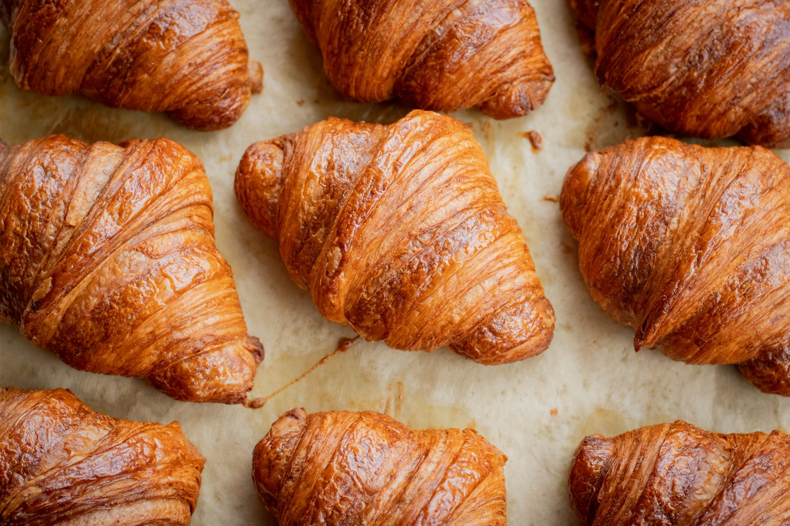

A LITTLE ABOUT US
Made slowly.
Gone by lunchtime.
We believe a neighbourhood runs on good coffee and familiar faces. So we’re up early, folding butter, shaping dough and getting the first pot on. Come as you are.
Come find us
FRESH OUT OF THE OVEN. EVERY MORNING.
Slow dough. Proper coffee. A little something worth getting out of bed for.
A LITTLE ABOUT US
We believe a neighbourhood runs on good coffee and familiar faces. So we’re up early, folding butter, shaping dough and getting the first pot on. Come as you are.
Come find usWE’LL PUT THE COFFEE ON
Amsterdam · example location
This is an example location, not a real venue.
Monday–Friday · 07:30–16:00
Saturday–Sunday · 08:30–16:00